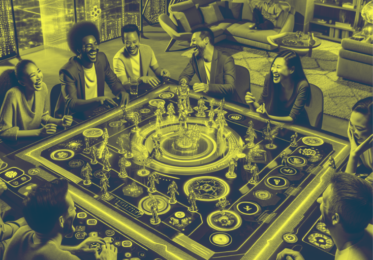
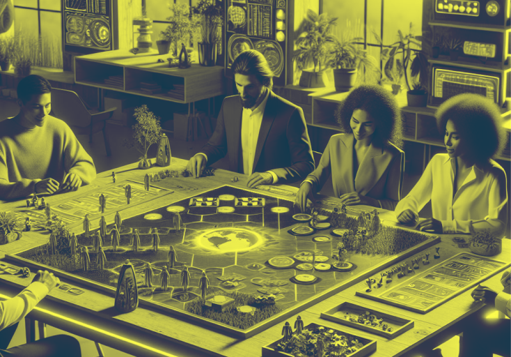

Les jeux de société évolueront probablement vers des expériences mêlant technologie et interaction sociale. Voici quelques pistes pour imaginer leur futur.
L'intégration des réalités augmentée et virtuelle
Les jeux de société du futur pourraient bénéficier d'une intégration encore plus poussée des technologies de réalité augmentée et virtuelle. Imaginez des jeux où le plateau se transforme sous vos yeux grâce à des lunettes AR, permettant d’interagir avec des hologrammes en 3D qui évoluent en fonction de vos décisions. Les pions et personnages que vous contrôlez pourraient se matérialiser dans l’espace de jeu, offrant une immersion inédite. Pour les amateurs de VR, des mondes entiers pourraient s'ouvrir, transportant les joueurs dans des environnements totalement virtuels, où chaque mouvement compte et chaque détail du plateau est visible à 360°.

Les jeux de société intelligents et connectés
Les objets connectés et l’intelligence artificielle (IA) pourraient jouer un rôle majeur. Des plateaux interactifs capables de s'adapter aux niveaux des joueurs, des pions équipés de capteurs ou de puces RFID, et des cartes dynamiques qui évoluent avec le jeu sont des concepts réalistes. L’IA pourrait aussi agir comme un maître du jeu, adaptant les scénarios en fonction des décisions des joueurs, créant des rebondissements imprévus et personnalisés pour chaque partie.
Des jeux modulables et personnalisables
Les jeux de société du futur pourraient devenir entièrement personnalisables. Grâce à des technologies comme l’impression 3D, les joueurs pourraient créer leurs propres pions, cartes ou même leurs propres scénarios. Ces jeux modulables permettraient une rejouabilité infinie, chaque partie pouvant être différente de la précédente. De plus, les plateformes en ligne pourraient proposer des modules téléchargeables, permettant aux joueurs d’étendre constamment leur jeu, en y intégrant de nouvelles règles ou éléments interactifs.
Le jeu collaboratif et multivers
Les jeux de société modernes tendent déjà vers des expériences plus collaboratives, mais le futur pourrait pousser ce concept encore plus loin. On peut imaginer des jeux de société où les joueurs interagissent non seulement entre eux mais aussi avec des univers partagés en ligne, créant un "multivers" de jeux de société connectés. Des parties simultanées, se déroulant à des endroits différents, pourraient affecter l’évolution globale du jeu. Ce concept offrirait une dimension nouvelle où chaque joueur, dans son coin du monde, contribuerait à une grande aventure collective.
En conclusion, les jeux de société du futur promettent de repousser les frontières de l'imagination grâce aux nouvelles technologies, tout en conservant leur rôle essentiel : rassembler les joueurs pour des moments de partage et d'amusement. Réalité augmentée, intelligence artificielle, personnalisation et durabilité transformeront ces jeux en expériences encore plus immersives et écoresponsables, sans pour autant perdre leur essence collective.